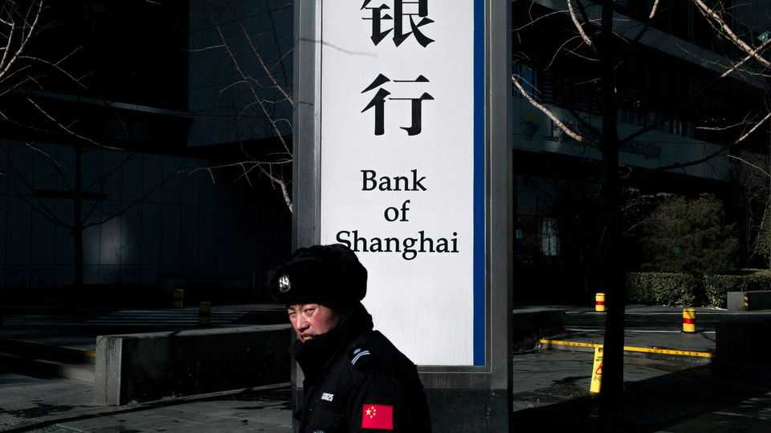

Indebted tycoons haunt China’s banking system
Lenders are feeling the hangover from years of Wild East capitalism

Nov 5th 2026
ON OCTOBER 31ST Bank of Shanghai gave investors a nasty shock. It said its net profit had collapsed by 93% in the third quarter, year on year, to 350m yuan ($53m); its non-performing loans shot up by 75% in the first nine months of 2026; and the capital set aside to cover unexpected losses hit the lowest in a decade. Its share price plunged by over 10%. The main source of the lender’s troubles seems to be its relationship with one man, Yao Zhenhua.
Mr Yao has been stalking Chinese finance since 2015. That year his conglomerate, Baoneng, made a hostile bid for Vanke, a giant property developer. This was a triple surprise: such takeovers are almost unheard of in China; they are entirely unheard of when the target is, like Vanke, partly state-owned; and Baoneng financed the deal in an unconventional way, using premiums from several insurers it owned. This brazenness earned Mr Yao the nickname “barbarian”, in tribute to American corporate raiders of the late 1980s.
The takeover failed and Mr Yao’s use of premiums was found to be illegal (China tightly regulates how they can be invested). In 2017 he was banned from the insurance industry for ten years. But he expanded his empire in other areas. This included a 6.6bn yuan debt-fuelled investment in Qoros, a maker of electric cars. As Bank of Shanghai has disclosed, commercial conquest has not gone well for the barbarian.
As part of a long-running lawsuit against Mr Yao and Baoneng, the lender has sought to recover loans extended to his companies worth at least 12.9bn yuan. The loans were secured in 2020 with property and with personal guarantees from Mr Yao. This collateral took a hit when China’s property sector imploded. Qoros, meanwhile, sold too few cars and folded. In January this year Mr Yao, whose poor credit score bans him from commercial flights and luxury hotels, appeared in a social-media post claiming that local government officials had cheated him out of his investment in the car firm.
The most stunning revelation from Bank of Shanghai is that Mr Yao and his companies have “no executable assets” from which to recover those debts. This would explain photos posted to social media of someone looking remarkably like him riding the metro in Shenzhen, a big southern city, rather than taking a limo. More importantly for Bank of Shanghai’s investors, it explains what happened to the lender’s profits, which were eaten up by huge impairment losses. Many other Chinese banks that have done business with Mr Yao and Baoneng may be next.
Mr Yao is not the first tycoon to rattle the banking system. In 2019 another, Xiao Jianhua, caused a mini financial crisis. He is in prison. A fellow indebted plutocrat, Lai Xiaomin, was executed in 2021. Despite the Communist Party’s efforts to rid Chinese finance of such rogues, the Baoneng barbarian is probably not the last.■